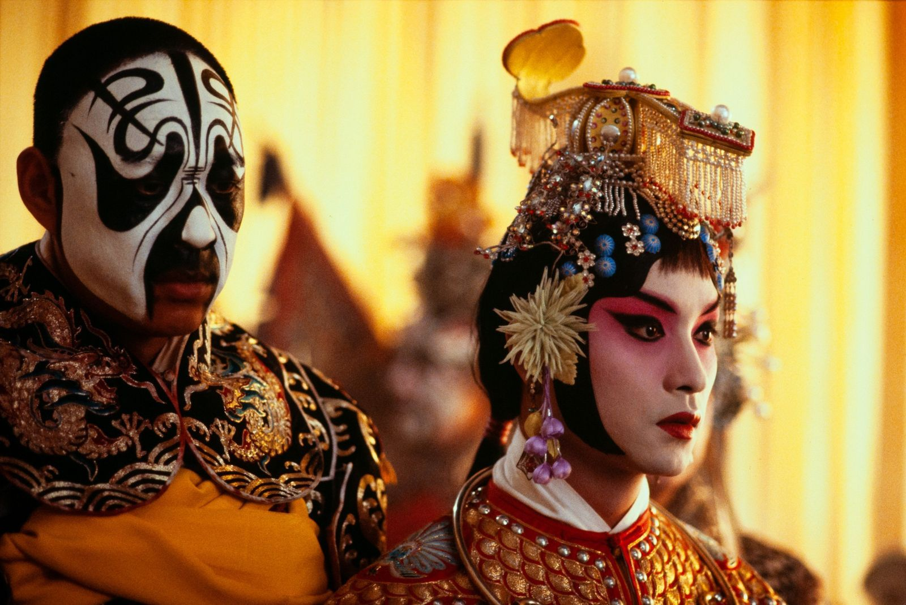

首页 / 剧情与人生
CATEGORY 04 · DRAMA
四部影片从友情、家庭、爱情和舞台出发，记录人在漫长岁月和时代变化中的不同选择。
Selected Films
四部影片时间跨度较大，适合在能够安静观看的时候选择。

The Shawshank Redemption
漫长的监狱生活中，一个人怎样守住希望和尊严。
Forrest Gump
阿甘一路向前，也见证了美国社会的许多重要时刻。
Life Is Beautiful
一位父亲用游戏保护孩子，也守住了家庭最后的温暖。
Farewell My Concubine
两位京剧演员的半生，也映照了时代的多次变化。
《肖申克的救赎》重在友情和希望，《阿甘正传》时间跨度较大，《美丽人生》前后风格变化明显，《霸王别姬》片长最长，适合留出完整时间观看。